网络层提供的服务
网络层提供主机到主机的通信服务。
一、转发和路由选择
区别：转发是将分组从一个输入链路接口转移到适当的输出链路接口的路由器本地动作。路由选择是网络范围的过程，决定分组从源到目的地所采取的端到端路径。
考虑旅行者从宾夕法尼亚州到佛罗里达州的行程，转发就类似于图中要经过很多立交桥，离开每个立交桥的时候才决定走哪一条路，而路由选择像出发前旅行者就看地图在许多可能的路径(每条路径包含多个立交桥)中选择一条路线。
二、虚电路和数据报网络
目前所有网络层不同时提供两种不同服务，在网络层提供连接服务被称为虚电路（VC）网络，在网络层提供无连接服务的计算机网络称为数据报网络。
虚电路：
属于一条虚电路的分组将在首部携带一个VC号，因为一条虚电路在每条链路上可能具有不同的VC号，每台中间路由器必须用一个新的VC号来替代每个传输分组的VC号。新VC号从转发表获得。
无论何时跨越一台路由器创建一条新的虚电路，转发表就增加了一个新表项。类似地，无论何时终止一条虚电路，沿着该途径每个表中的相应项将被删除。
数据报网络:
在数据报网络中，每台路由器由一个将目的地址映射到链路接口的转发表，当分组到达路由器时，路由器使用该分组的目的底子好在转发表中查找适当的输出链路接口。然后路由器有意将分组向该输出链路接口转发。
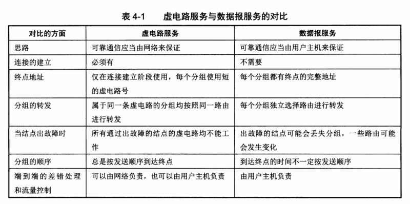
三、路由器的工作原理
一台路由器的输入端口，输出端口和交换结构与共同实现了这种转发功能，而且总是用硬件实现。这些转发功能有时总称为路由器转发平面。
路由器的组成部分
输入端口：
- 执行将一条输入的物理链路与路由器相连接的物理层功能
- 执行与位于入链路远端的数据链路层交互的数据链路层功能
- 查找功能，查询转发表决定路由器的输出端口，将分组转发到输出端口
交换结构
- 将路由器的输入端口与输出端口相连
- 分组通过交换结构转发到输出端口
输出端口
- 存储从交换结构接收的分组，执行必要的链路层和物理层功能在输入链路上传输这些分组。
- 当链路是双向的时，输出端口与输入端口在同一线路卡成对出现
路由选择处理器
- 执行路由选择协议
- 维护路由选择表、连接的链路状态信息，为路由器计算转发表
- 网络管理
路由转发平面
- 一台路由器的输入端口、输出端口和交换结构共同实现了转发功能，并且用硬件实现（软件太慢，需以纳秒时间尺度运行）
路由控制平面
- 路由器的控制功能（执行路由选择协议、对上线或者下线链路进行响应、管理功能），在毫秒时间尺度上运行，用软件实现并在选择处理器上执行（一种cpu）
三种交换模式
经内存交换
一个分组到达输入端口时，该端口会先通过中断方式向路由选择处理器发出信号
分组从输入端口复制到处理器内存中（现代路由器查找交换进内存，是由输入线路卡处理的）
早期路由选择处理器从首部提取目的地址，在转发表查找输出端口，将分组复制到输出端口
经总线交换
输入端口经一根共享总线将分组直接传送到输出端口，无需路由选择处理器的干预
路由器的交换带宽受总线速率限制
经互联网络交换
纵横式交换机，2N条总线组成网络，连接N各输入端口和N个输出端口
每条垂直的总线与每条水平的总线交叉，交叉点通过交换结构控制器开启闭合
某分组到达端口A，需要转发到Y，交换机控制器闭合总线A和Y的交叉点，A在其总线上发送分组，仅由Y接收；同时B也能发分组到X，因为没有公用总线。纵横式网络能并行转发多个分组
四、网际协议（IP）：因特网中的转发和编址
网络层三个组件
- IP协议
- 路由选择协议
- 控制报文协议（ICMP）：报告数据报中的差错、对某些网络层信息请求进行响应的设施
IP数据报格式分析
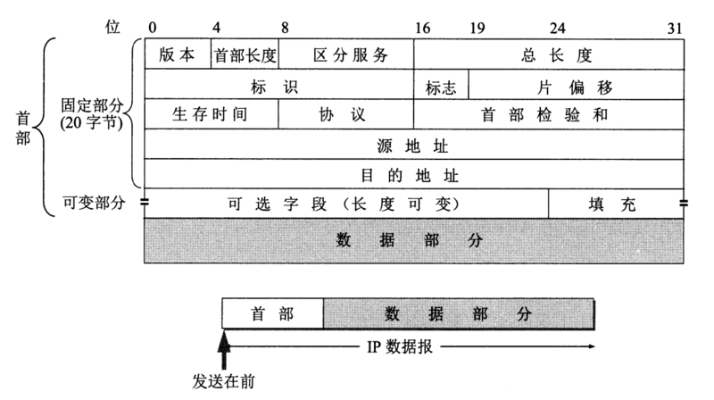 - 版本号（IPv4、IPv6）：不同版本对数据报不同解释
- 首部长度：数据报可包含可变数量的选项。不过大部分没有，首部固定20字节
- 服务类型：区分不同类型的IP数据报
- 数据报长度：首部+数据的长度。该字段16bit，然而一般数据报很少超过1500字节
标识、标志、片偏移：IP分片相关。不过IPv6不允许在路由器上对分组分片 - 寿命TTL：确保数据报不会永远在网络中循环。每被一个路由器处理时，值-1。若值减到0，丢弃数据报
- 协议号：到达最终目的地才有用，指示了IP数据报的数据部分应该交给哪个运输层协议。如6交给TCP，如17交给UDP
- 协议号是将网络层与运输层绑定到一起的粘合剂；端口号是将运输层和应用层绑定的粘合剂
- 首部检验和：帮忙路由器检测收到IP数据报中首部的比特错误，有错一般丢弃
- 源和目的IP地址：源主机通过DNS查找目的地址
- 选项：IPv6已抛弃选项字段
- 数据（有效载荷）：包含运输层报文段（TCP或UDP），或ICMP报文段
一个IP数据报有长为20的首部，如果数据报承载一个TCP报文段，则每个无分片数据报承载总长40的首部（还有TCP的20）以及应用层报文
IP数据报分片
因为不是所有的链路层协议都能承载相同长度的网络层分组。比如以太网帧的MTU(Maximum Transmission)即最大传送单元(一个链路层帧能承载的最大数据量)为1500字节。链路层的MTU严格限制IP数据报的长度。因此要进行分片，将IP数据报中的数据分片成多个较小的IP数据报(fragment)再分别用链路层帧封装。
e.g. 一个4000字节的数据报(20字节IP首部加上3980字节IP有效载荷)到达一台路由器，且必须被转发到一条MTU为1500字节的链路上。问要分多少片？每片多少字节？
解答： 3980/1500 = 2.65 < 3 则应该分为3片，数据字段分别长1480, 1480, 1020 (3980-1480-1480)
注意！分片除了最后一片，所有数据字段长应该是8的倍数！偏移值应当被规定以8字节块为单位！
分类的IP地址 — 最基本的编址方法
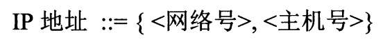
A类地址
可指派的网络号是126即：$2^{7}-2$个.(减去全0和全1两种情况)。最大主机数 $2^{24}-2$个。(减去主机号全0和全1)
B类地址
可指派的网络号是16383即：$2^{14}-1$个.(没有主机号全0和全1的情况，但是128.0.0.0不指配，最小网络地址128.1.0.0)。最大主机数$2^{16}-2$个。(减去主机号全0和全1)
C类地址
可指派的网络号是2097151即：$2^{21}-1$个.(没有主机号全0和全1的情况，但是192.0.0.0不指配,最小网络地址192.0.1.0)。最大主机数$2^{8}-2$个。(减去主机号全0和全1)
D，E类专用了，一般很少见
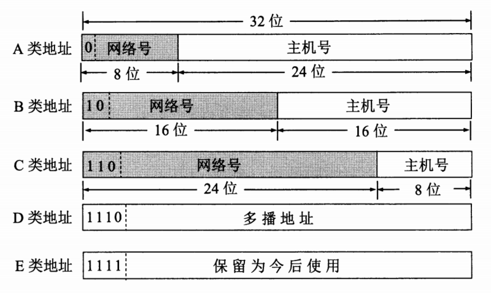
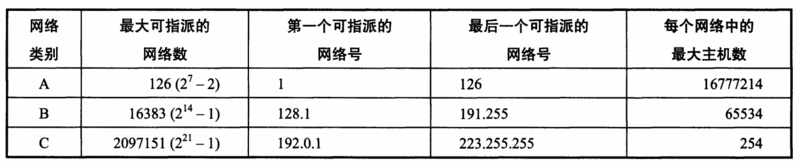
划分子网
从网络的主机号借用若干位作为子网号。划分子网在内部，因此对外仍是一个网络！
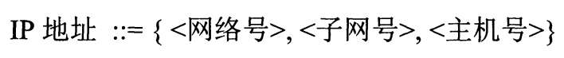
子网掩码(network mask)
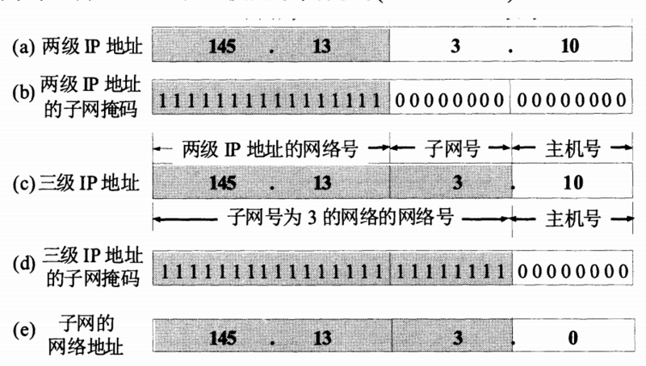
子网的网络地址 = 子网掩码 & IP地址 (相与 and)
一张图足以概括。另外，若没有划分子网，也必须有子网掩码，使用默认子网掩码。
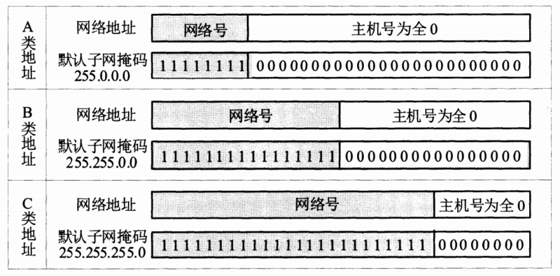
五、路由选择算法
一种广义分类可将路由选择算法分为
- 全局式路由选择算法(global routing algorithm)：用完整的、全局性的网络制式计算出从源到目的地之间的最低费用路径。实践中，具有全局状态信息的算法常被称为链路状态(Link State, LS)算法。
- 分散式路由选择算法(decentralized routing algorithm)：以迭代、分布式的方式计算出最低费用路径。一个常用的算法为距离向量(Distance-Vector, DV)算法。
由于过于复杂，需要单独研究
六、自治系统内路由选择 – 内部网关协议
6.1、路由选择信息协议(Routing Information Protocol, RIP)
使用距离向量算法。
- 仅和相邻路由器交换信息。
- 路由器交换的信息时当前本路由器知道的全部信息。
- 按固定的时间间隔交换路由信息。
刚开始时，到直接相连的网络距离定义为1。每经过一个路由器，跳数加1，跳数为16相当于不可达。事实证明，RIP协议可以较快收敛。
缺点是当网络出现故障，要记过比较长的时间才能将信息传送到所有的路由器。
RIP协议使用运输层的用户数据报UDP进行传送。RIP1和RIP2的报文首部相同，路由部分有些不同。
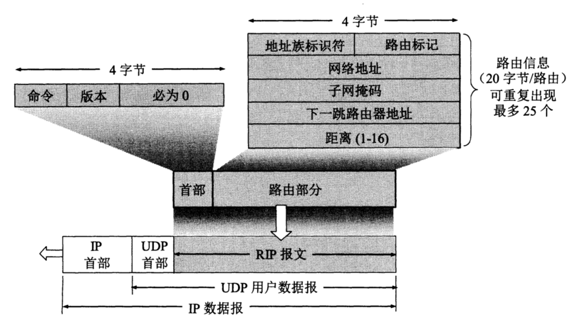
6.2、开放最短路径优先(Open Shortest Path First, OSPF)
使用链路状态协议。
- 向本自治系统中所有路由器发送信息。使洪泛法(flooding)。
- 发送的信息就是与本路由器相邻的所有路由器的链路状态。
- 只有当链路状态发生变化时，路由器才向所有路由器用洪泛法发送此消息。
各个路由器频繁的交换链路状态信息，所有的路由器建立一个链路状态数据库，这实际上就是全网的拓扑图。OSPF的更新过程收敛得快。
OSPF直接用IP数据报传送。(注意RIP是用UDP的)
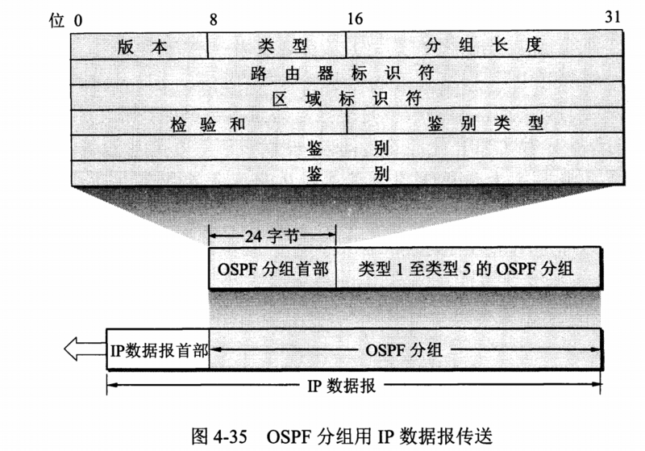
6.3、外部网关协议BGP
BGP采用路径向量(path vector)路由选择协议。协议交换路由信息节点数量级是自治系统个数的数量级。刚开始运行时，BGP的邻站是交换整个的BGP路由表。但以后只需要在发生变化时更新有变化的部分。
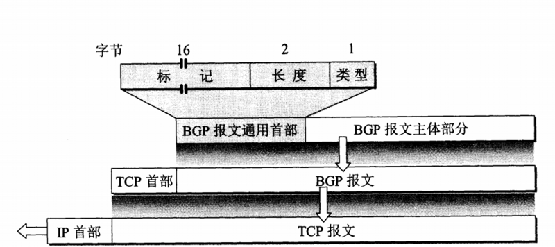
七、广播与多播路由选择
7.1、 广播路由选择算法
N次单播
给定N个目的节点，源结点产生该分组的N份副本，对不同目的地每个副本编址，用单播路由选择传送
效率低，多份独立的副本会重复经过某段链路，让网络结点本身生成分组副本更有效
无控制洪泛
源节点向所有邻居发送分组副本，结点复制该分组并向它邻居转发
图中有环，会无休止循环
当一个结点与两个以上结点连接时，它将生成并转发广播分组的多个副本，副本中的每个又产生多个副本，产生广播风暴，使网络变得毫无用处
受控洪泛
序号控制洪泛：源节点将其地址或其他唯一标识和广播序号放入广播分组，每个结点维护源地址和序号列表
反向路径转发RPF：仅当分组到达的链路正好位于它自己返回源的最短单薄路径上，才传输报文，否则丢弃
生成树广播
构造最小生成树；结点只需知道哪些邻居在生成树中
分布式生成树算法
基于中心的方法：建立一棵生成树时，定义一个中心结点（汇合点、核），结点向中心结点单薄加入树的报文。加入树的报文使用单播路由选择朝着中心结点进发，直到它到达一个生成树中，经过的路径再嫁接到现有生成树中
7.2、多播
一些新兴应用要求将分组从一个或多个发送方交付给一组接收方，比如各种直播、游戏
多播数据报使用间接地址来编址。每个分组难道携带所有接收方IP地址？这不科学
用一个标识表示一组接收方（D类多播地址），接收方小组称为多播组
因特网组管理协议IGMP
IGMP + 多播路由选择协议 组成网络层多播
- 第一阶段：当某个主机加入新的多播组时，该主机应向多播组的多播地址发送IGMP 报文，声明自己要成为该组的成员。本地的多播路由器收到 IGMP 报文后，将组成员关系转发给因特网上的其他多播路由器。
- 第二阶段：因为组成员关系是动态的，因此本地多播路由器要周期性地探询本地局域网上的主机，以便知道这些主机是否还继续是组的成员。只要对某个组有一个主机响应，那么多播路由器就认为这个组是活跃的。但一个组在经过几次的探询后仍然没有一个主机响应，则不再将该组的成员关系转发给其他的多播路由器。